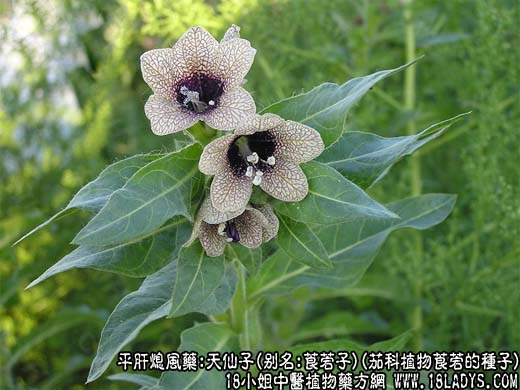
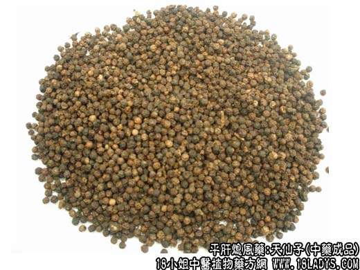
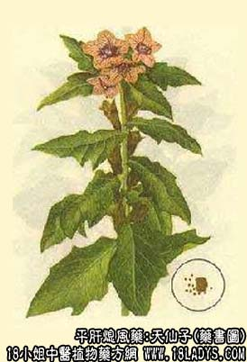

天仙子为少常用中药。《神农本草经》列为下品。
别名：莨菪子。
来源：为茄科植物莨菪的种子。野生或栽培均有。
产地：生产与河南、河北、陕西、新疆及东北等地。
性状鉴别：天仙子略呈肾形，两面扁平，直径约1毫米。表面棕黄色或灰棕色，有细密的网纹，脐点处凸出。气无，味微辛。
以身干、粒大饱满，无杂质者为佳。
主要成分：含生物碱、主要为莨菪碱、阿托品，又含脂肪油、留醇。
功效与作用：1、对腺体、平滑肌的影响。阿托品在使用一般治疗量时，对分泌肌能即呈强大的抑制作用，引起口干及皮肤干燥；较大剂量，可减少胃分泌量，但往往不能降低酸度。治疗量的阿托品，对于平滑肌脏器的正常活动影响很小，但当它们有过度的收缩或活动时，便能表现在显著的松弛作用，故可用于胃肠痉挛，输尿管痉挛及膀胱刺激症状等。
2、对眼的作用。阿托品有散瞳、升高眼压与调节麻痹的作用，因此，可用于虹膜炎及睫状肌炎，使发言组织停止活动，减少刺激而促使痊愈。由于其升高眼压作用，对青光眼患者应禁用。
3、对心血管的影响。阿托品能解除迷走神经对心脏的抑制，从而使心率加快。此外，尚能取消迷走神经机能过度所致的传导阻滞和心律失常，可用于锑剂中毒所引起的严重心律失常。
炮制：生用或醋煮。
性味：苦、辛、温、有毒。
归经：入心、胃、肝经。
功能：定痛、止痛。
主治：癫狂、风痫、风痹、咳喘、胃痛、牙痛。
临床应用：天仙子所含的成分莨菪碱和阿托品，临床上用来治疗癫痫、风痢及胃痛等症。治五癫，常与牛黄、桂心等配伍，如莨菪子散。
使用注意：1、天仙子有毒，内服宜慎。
2、（神农本草经》）：“多食令人狂走。”
用量：0.5~30g；外用：煎水洗，或烧烟熏。
处方举例：莨菪子散（《古今录验方》）治五癫、反侧羊鸣，目翻吐涎等症；天仙子100g，猪卵一具（阴干百日），牛黄2.4g，鲤鱼胆2.4g，桂心3g。以上五味，以酒50g，溃莨菪子、暴令干，乃捣令下筛。酒服2.4g，日再服，当如醉，以知为度。忌生葱等。
注：天仙子品种较多，我国大多地区使用为正文天仙子。
2、江苏、浙江、湖南、湖北等省另用一种进口天仙子，形状与正文有显著不同。陕西等地所用的天仙子，与上述二种也不相同，但注意鉴别。
3、此外，江苏南京地区以水红花子作天仙子药用。按天仙子，应以正文国产莨菪子为正品，进口天仙子须作进一步研究。